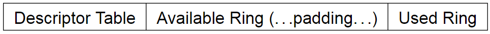

Virtio
Virtio represents a virtual device family. In this chapter, we will focus on the Block Device, a virtual disk. The full documentation is available at here.
Section 2, 4 and 5 are mostly relevant and recommanded to read first.
In this chapter, we will implement the legacy interface of virtio block device, which is implemented by QEMU and our target OS xv6 provides a driver for it.
1. Block Device & MMIO Device Register Layout
Section 5.2 contains an introduction to the Block Device. We can find out many useful information there. The Device ID is 2 while there is only one virtqueue, whose index is 0.
Section 4.2.2 & 4.2.4 provide the register layout for both current and legacy interfaces. Some registers are only explained in Section 4.2.2, that is why I mention it.
I have listed most of these in param.rs.
2. Virtqueue
The mechanism for bulk data transport on virtio devices is pretentiously called a virtqueue. Each device can have zero or more virtqueues. The block device have only one virtqueue, namely requestq, indexed as 0. The QueueNotify should be initialized with the max number of virtqueues. It is 1 in this case.
Each virtqueue occupies two or more physically-contiguous pages (usually defined as 4096 bytes) and consists of three parts:

struct virtq {
// The actual descriptors (16 bytes each)
struct virtq_desc desc[ Queue Size ];
// A ring of available descriptor heads with free-running index.
struct virtq_avail avail;
// Padding to the next Queue Align boundary.
u8 pad[ Padding ];
// A ring of used descriptor heads with free-running index.
struct virtq_used used;
};
2.1 Descriptor
The first field of a virtqueue is an array of descriptor, aka. descriptor table.
The descriptor table refers to the buffers the driver is using for the device. addr is a physical address, and the buffers can be chained via next. Each descriptor describes a buffer which is read-only for the device (“device-readable”) or write-only for the device (“device-writable”), but a chain of descriptors can contain both device-readable and device-writable buffers.
struct virtq_desc {
/* Address (guest-physical). */
le64 addr;
/* Length. */
le32 len;
/* This marks a buffer as continuing via the next field. */
#define VIRTQ_DESC_F_NEXT 1
/* This marks a buffer as device write-only (otherwise device read-only). */
#define VIRTQ_DESC_F_WRITE 2
/* This means the buffer contains a list of buffer descriptors. */
#define VIRTQ_DESC_F_INDIRECT 4
/* The flags as indicated above. */
le16 flags;
/* Next field if flags & NEXT */
le16 next;
};
The actual contents of the memory offered to the device depends on the device type. Most common is to begin the data with a header (containing little-endian fields) for the device to read, and postfix it with a status tailer for the device to write.
In our emulator (also in QEMU), the block device request contains three descriptors. The first one (the header) contains some request information, the second one describes the data, and the last one contains a status for the device to write. (However, the code provided by the original author ignores the last one, so do I.)
2.2 Available Ring
The available ring has the following layout structure:
struct virtq_avail {
#define VIRTQ_AVAIL_F_NO_INTERRUPT 1
le16 flags;
le16 idx;
le16 ring[ /* Queue Size */ ];
le16 used_event; /* Only if VIRTIO_F_EVENT_IDX */
};
The driver uses the available ring to offer buffers to the device: each ring entry refers to the head of a descriptor chain. It is only written by the driver and read by the device.
idx field indicates where the driver would put the next descriptor entry in the ring (modulo the queue size). This starts at 0, and increases.
2.3 Used Ring
The used ring has the following layout structure:
struct virtq_used {
#define VIRTQ_USED_F_NO_NOTIFY 1
le16 flags;
le16 idx;
struct virtq_used_elem ring[ /* Queue Size */];
le16 avail_event; /* Only if VIRTIO_F_EVENT_IDX */
};
/* le32 is used here for ids for padding reasons. */
struct virtq_used_elem {
/* Index of start of used descriptor chain. */
le32 id;
/* Total length of the descriptor chain which was used (written to) */
le32 len;
};
The used ring is where the device returns buffers once it is done with them: it is only written to by the device, and read by the driver.
Each entry in the ring is a pair: id indicates the head entry of the descriptor chain describing the buffer (this matches an entry placed in the available ring by the guest earlier), and len the total of bytes written into the buffer.
Historically, many drivers ignored the len value, as a result, many devices set len incorrectly. Thus, when using the legacy interface, it is generally a good idea to ignore the len value in used ring entries if possible.
2.4 Virtio Block Request
The driver queues requests to the virtqueue, and they are used by the device (not necessarily in order). Each request is of form:
struct virtio_blk_req {
le32 type;
le32 reserved;
le64 sector;
u8 data[];
u8 status;
};
The type of the request is either a read (VIRTIO_BLK_T_IN), a write (VIRTIO_BLK_T_OUT), a discard (VIRTIO_BLK_T_DISCARD), a write zeroes (VIRTIO_BLK_T_WRITE_ZEROES) or a flush (VIRTIO_BLK_T_FLUSH)
#define VIRTIO_BLK_T_IN 0
#define VIRTIO_BLK_T_OUT 1
#define VIRTIO_BLK_T_FLUSH 4
#define VIRTIO_BLK_T_DISCARD 11
#define VIRTIO_BLK_T_WRITE_ZEROES 13
The sector number indicates the offset (multiplied by 512) where the read or write is to occur. This field is unused and set to 0 for commands other than read or write.
VIRTIO_BLK_T_IN requests populate data with the contents of sectors read from the block device (in multi- ples of 512 bytes). VIRTIO_BLK_T_OUT requests write the contents of data to the block device (in multiples of 512 bytes).
We will only support VIRTIO_BLK_T_IN and VIRTIO_BLK_T_OUT requests.
3. Virtio Block API
Our implementation is simplified but still contains enough details. And it won't be too difficult to improve it.
I have defined almost all of the structure we mentioned above in virtqueue.rs except the virtq itself. And the structure of request lacks two fields data and status. These structure are defined almost as same as xv6's.
Let's define a virtio block device as following:
virtio.rs
pub struct VirtioBlock {
id: u64,
driver_features: u32,
page_size: u32,
queue_sel: u32,
queue_num: u32,
queue_pfn: u32,
queue_notify: u32,
status: u32,
disk: Vec<u8>,
}
const MAX_BLOCK_QUEUE: u32 = 1;
impl VirtioBlock {
pub fn new(disk_image: Vec<u8>) -> Self {
let mut disk = Vec::new();
disk.extend(disk_image.into_iter());
Self {
id: 0,
driver_features: 0,
page_size: 0,
queue_sel: 0,
queue_num: 0,
queue_pfn: 0,
queue_notify: MAX_BLOCK_QUEUE,
status: 0,
disk,
}
}
}
When we create a virtio block device, we initialize its NOTIFY as maximum number of virtqueue. When the device is interrupting, NOTIFY contains the index of the virtqueue needed to process.
The virtio block device provide several APIs:
- interrupting: whether the device is interrupting
- load: load the value of certain MMIO registers
- store: store some value into certain MMIO registers
- get_new_id: get the next id of used ring.
- desc_addr: get the base address of the virtqueue.
- read_disk: read data from disk and store into data buffer.
- write_disk: write the data contained in buffer into disk.
The implementation is straightforward. Please stop to read the code in virtio.rs. You also need to add this module into main.rs and bus.rs.
4. Data Transfer
We will implement the data_access in cpu.rs. When an virtio block interrupt arrives, we call this function to perform disk IO.
The first step is to compute the address of the descriptor table, available ring and the used ring. We also cast the address to a type reference to ease field access.
cpu.rs
impl Cpu {
pub fn disk_access(&mut self) {
const desc_size: u64 = size_of::<VirtqDesc>() as u64;
// 2.6.2 Legacy Interfaces: A Note on Virtqueue Layout
// ------------------------------------------------------------------
// Descriptor Table | Available Ring | (...padding...) | Used Ring
// ------------------------------------------------------------------
let desc_addr = self.bus.virtio_blk.desc_addr();
let avail_addr = desc_addr + DESC_NUM as u64 * desc_size;
let used_addr = desc_addr + PAGE_SIZE;
// cast address to reference
let virtq_avail = unsafe { &(*(avail_addr as *const VirtqAvail)) };
let virtq_used = unsafe { &(*(used_addr as *const VirtqUsed)) };
// ... TO BE CONTINUE ...
}
}
The pattern to cast an address to an immutable type reference is as following. We will repeat it many times.
let obj = unsafe { &(*(memaddr as *const YourType))};
The idx field of virtq_avail should be indexed into available ring to get the index of descriptor we need to process.
cpu.rs
impl Cpu {
pub fn disk_access(&mut self) {
// ...
let idx = self.bus.load(&virtq_avail.idx as *const _ as u64, 16).unwrap() as usize;
let index = self.bus.load(&virtq_avail.ring[idx % DESC_NUM] as *const _ as u64, 16).unwrap();
// ... TO BE CONTINUE ...
}
}
As we have above, a block device request use three descriptors. One for the header, one for the data, and one for the status. The header descriptor contains the request. We use only first two descriptors.
The first descriptor contains the request information and a pointer to the data descriptor. The addr field points to a virtio block request. We need two fields in the request: the sector number stored in the sector field tells us where to perform IO and the iotype tells us whether to read or write. The next field points to the second descriptor. (data descriptor)
cpu.rs
impl Cpu {
pub fn disk_access(&mut self) {
// ...
let desc_addr0 = desc_addr + desc_size * index;
let virtq_desc0 = unsafe { &(*(desc_addr0 as *const VirtqDesc)) };
let next0 = self.bus.load(&virtq_desc0.next as *const _ as u64, 16).unwrap();
let req_addr = self.bus.load(&virtq_desc0.addr as *const _ as u64, 64).unwrap();
let virtq_blk_req = unsafe { &(*(req_addr as *const VirtioBlkRequest)) };
let blk_sector = self.bus.load(&virtq_blk_req.sector as *const _ as u64, 64).unwrap();
let iotype = self.bus.load(&virtq_blk_req.iotype as *const _ as u64, 32).unwrap() as u32;
// ... TO BE CONTINUE ...
}
}
We use the next0 of first descriptor to compute the address of the second descriptor. To perform disk IO, we need the addr field and the len field. The addr field points to the data to read or write while the len donates the size of the data. And we perform disk IO based on the iotype.
cpu.rs
impl Cpu {
pub fn disk_access(&mut self) {
// ...
let desc_addr1 = desc_addr + desc_size * next0;
let virtq_desc1 = unsafe { &(*(desc_addr1 as *const VirtqDesc)) };
let addr1 = self.bus.load(&virtq_desc1.addr as *const _ as u64, 64).unwrap();
let len1 = self.bus.load(&virtq_desc1.len as *const _ as u64, 32).unwrap();
match iotype {
VIRTIO_BLK_T_OUT => {
for i in 0..len1 {
let data = self.bus.load(addr1 + i, 8).unwrap();
self.bus.virtio_blk.write_disk(blk_sector * SECTOR_SIZE + i, data);
}
}
VIRTIO_BLK_T_IN => {
for i in 0..len1 {
let data = self.bus.virtio_blk.read_disk(blk_sector * SECTOR_SIZE + i);
self.bus.store(addr1 + i, 8, data as u64).unwrap();
}
}
_ => unreachable!(),
}
// ... TO BE CONTINUE ...
}
}
Finally, we need to update used ring to tell driver we are done.
cpu.rs
impl Cpu {
pub fn disk_access(&mut self) {
// ...
let new_id = self.bus.virtio_blk.get_new_id();
self.bus.store(&virtq_used.idx as *const _ as u64, 16, new_id % 8).unwrap();
}
}
The whole function is as follows:
cpu.rs
impl Cpu {
pub fn disk_access(&mut self) {
const desc_size: u64 = size_of::<VirtqDesc>() as u64;
// 2.6.2 Legacy Interfaces: A Note on Virtqueue Layout
// ------------------------------------------------------------------
// Descriptor Table | Available Ring | (...padding...) | Used Ring
// ------------------------------------------------------------------
let desc_addr = self.bus.virtio_blk.desc_addr();
let avail_addr = desc_addr + DESC_NUM as u64 * desc_size;
let used_addr = desc_addr + PAGE_SIZE;
// cast addr to a reference to ease field access.
let virtq_avail = unsafe { &(*(avail_addr as *const VirtqAvail)) };
let virtq_used = unsafe { &(*(used_addr as *const VirtqUsed)) };
// The idx field of virtq_avail should be indexed into available ring to get the
// index of descriptor we need to process.
let idx = self.bus.load(&virtq_avail.idx as *const _ as u64, 16).unwrap() as usize;
let index = self.bus.load(&virtq_avail.ring[idx % DESC_NUM] as *const _ as u64, 16).unwrap();
// The first descriptor:
// which contains the request information and a pointer to the data descriptor.
let desc_addr0 = desc_addr + desc_size * index;
let virtq_desc0 = unsafe { &(*(desc_addr0 as *const VirtqDesc)) };
// The addr field points to a virtio block request. We need the sector number stored
// in the sector field. The iotype tells us whether to read or write.
let req_addr = self.bus.load(&virtq_desc0.addr as *const _ as u64, 64).unwrap();
let virtq_blk_req = unsafe { &(*(req_addr as *const VirtioBlkRequest)) };
let blk_sector = self.bus.load(&virtq_blk_req.sector as *const _ as u64, 64).unwrap();
let iotype = self.bus.load(&virtq_blk_req.iotype as *const _ as u64, 32).unwrap() as u32;
// The next field points to the second descriptor. (data descriptor)
let next0 = self.bus.load(&virtq_desc0.next as *const _ as u64, 16).unwrap();
// the second descriptor.
let desc_addr1 = desc_addr + desc_size * next0;
let virtq_desc1 = unsafe { &(*(desc_addr1 as *const VirtqDesc)) };
// The addr field points to the data to read or write
let addr1 = self.bus.load(&virtq_desc1.addr as *const _ as u64, 64).unwrap();
// the len donates the size of the data
let len1 = self.bus.load(&virtq_desc1.len as *const _ as u64, 32).unwrap();
match iotype {
VIRTIO_BLK_T_OUT => {
for i in 0..len1 {
let data = self.bus.load(addr1 + i, 8).unwrap();
self.bus.virtio_blk.write_disk(blk_sector * SECTOR_SIZE + i, data);
}
}
VIRTIO_BLK_T_IN => {
for i in 0..len1 {
let data = self.bus.virtio_blk.read_disk(blk_sector * SECTOR_SIZE + i);
self.bus.store(addr1 + i, 8, data as u64).unwrap();
}
}
_ => unreachable!(),
}
let new_id = self.bus.virtio_blk.get_new_id();
self.bus.store(&virtq_used.idx as *const _ as u64, 16, new_id % 8).unwrap();
}
}
5. Conclusion
The implementation we provide here is not optimal. Ideally, we are supposed to check the flags field in the descriptor to follow the chain until the NEXT flag bit is not set. We can do such a simplification since we already know how xv6 deliver disk IO. Nevertheless, disk IO is hard and error-prone. And I had spent one week to figure out what happen in it. Next comes our final chapter, we will arm our emulator with a page table.